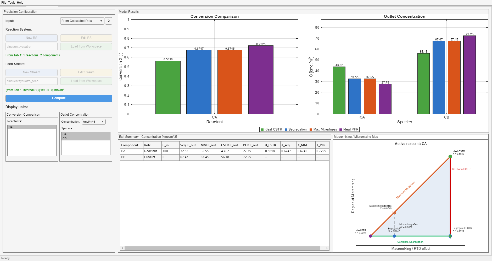

This tab is the first reactive checkpoint of the app. It combines an RTD with a reaction system and a feed stream, then compares Segregation, Maximum Mixedness, Ideal CSTR, and Ideal PFR.
ReactionSys and a valid Stream.ReactionSys and Stream.
| Model | Interpretation |
|---|---|
| Segregation | Mixing occurs only at the macroscopic RTD level. Molecules of different ages do not micromix ideally. |
| Maximum Mixedness | Represents the opposite micromixing limit relative to Segregation for the same RTD. |
| Ideal CSTR | Perfectly mixed reference reactor. |
| Ideal PFR | Plug-flow reference reactor. |
If you are deciding whether to stay in this full-RTD route or move to an equivalent-model tab, see the Model Selection guide.
| Area | What it tells you |
|---|---|
| Conversion Comparison | How the same reactant conversion moves between the four model interpretations. |
| Outlet Concentration | How all selected species leave the reactor under each model. |
| Exit Summary | A compact species-by-species view of inlet concentration, outlet concentration, species role, and conversions where meaningful. |
| Macromixing / Micromixing Map | A normalized visual summary of RTD effect and micromixing effect. |
For a deeper reading of how these summary tables should be interpreted, especially when model differences are small, see the Results Interpretation appendix.
The lower-right panel is a normalized triangular visual aid. It is not a direct conversion axis. Instead, it places the current RTD between the ideal PFR side and the RTD-of-a-CSTR side, while also showing the micromixing gap between Segregation and Maximum Mixedness for the same RTD.
| Problem | What to check |
|---|---|
| The plots stay empty after loading a session | Press Compute. A restored session may recover state without forcing a new reactive evaluation. |
| The reactant selector is disabled | There may be no functional reactants for the currently loaded chemistry and inlet state. |
| The tab says it is importing from Tab 1 but still cannot compute | Confirm that Tab 1 really holds not only an RTD but also the intended ReactionSys and Stream. |
| The map looks crowded near a corner | This usually means the current RTD behaves very close to an ideal limit or the micromixing gap is very small. |